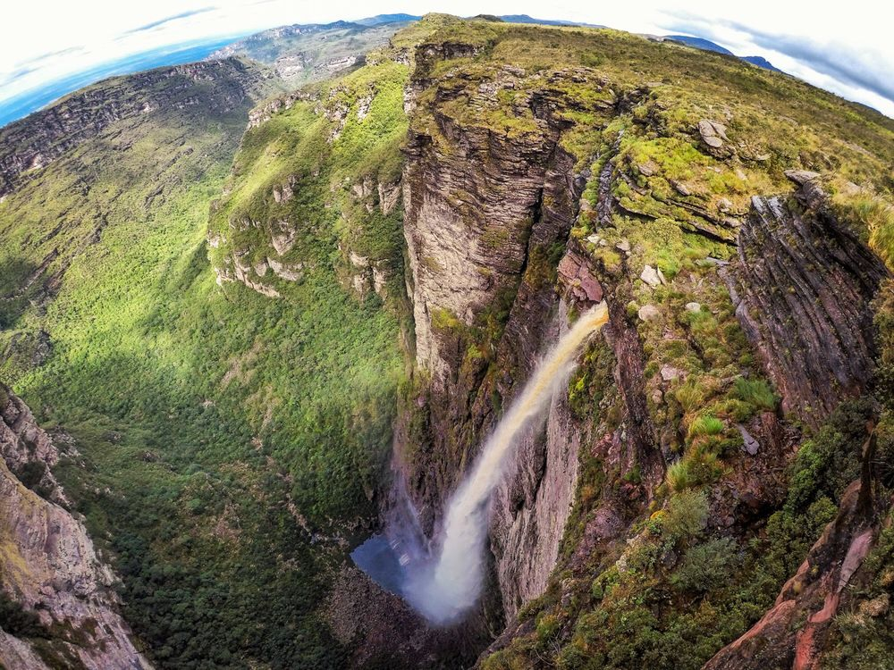
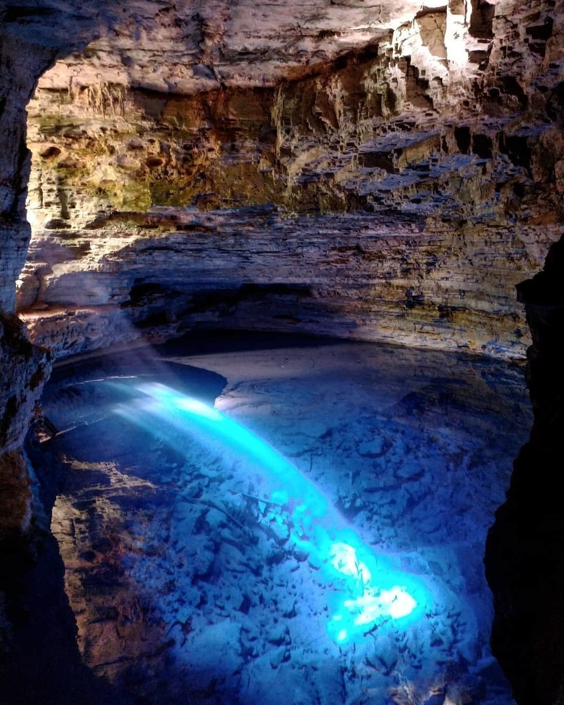
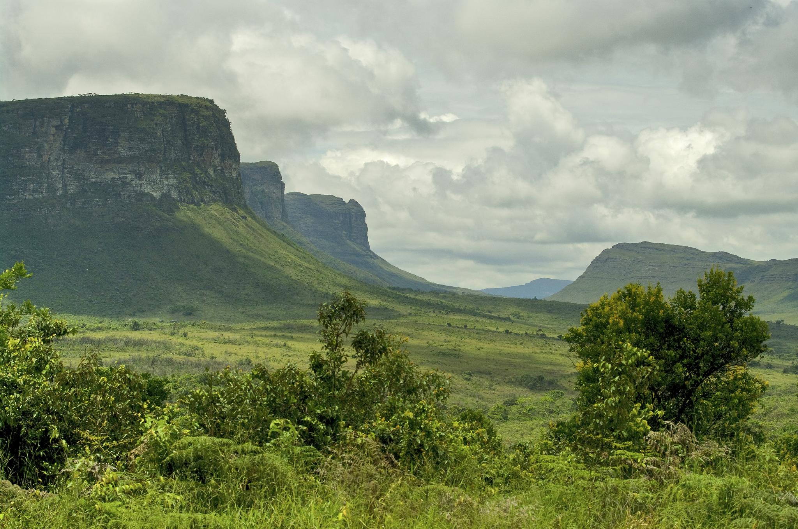

Pontos Turísticos

Cachoeira da Fumaça
A segunda maior cachoeira do Brasil, com 340m de queda.

Poço Encantado
Águas cristalinas iluminadas pelo reflexo do sol em cavernas.

Morro do Pai Inácio
Um dos miradouros mais famosos, com vista panorâmica incrível.